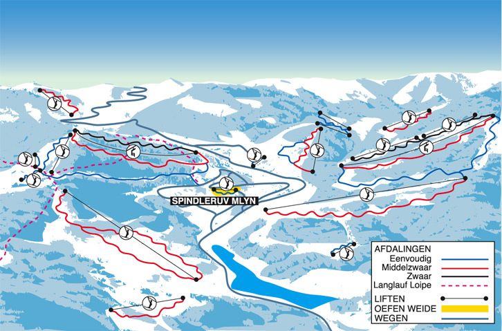
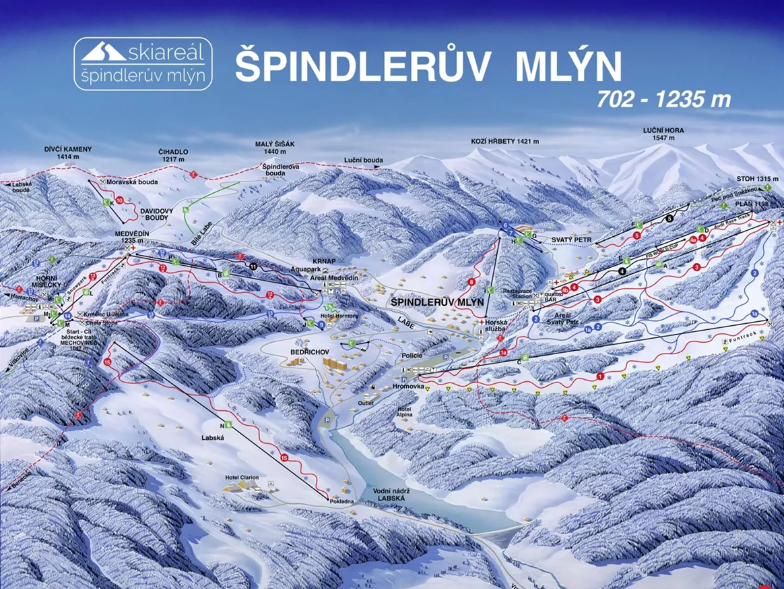
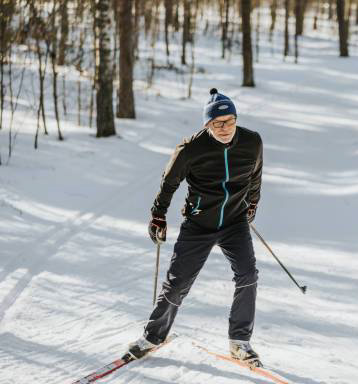
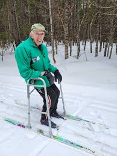
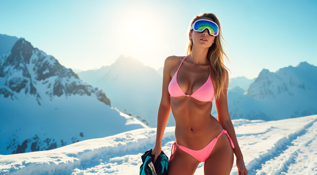
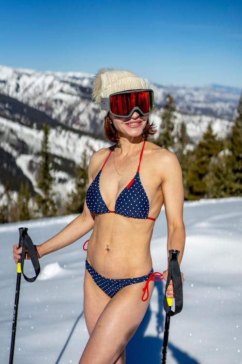

📋 Uitgangspunten skivakantie
👨👩👧👦
Gezelschap
3 gezinnen · 14 personen
Gezin 1: 4 volwassenen + 1 kind
Gezin 2: 2 volwassenen + 3 kinderen
Gezin 3: 2 volwassenen + 2 kinderen
Kinderleeftijden: 12–17 jaar
Gezin 1: 4 volwassenen + 1 kind
Gezin 2: 2 volwassenen + 3 kinderen
Gezin 3: 2 volwassenen + 2 kinderen
Kinderleeftijden: 12–17 jaar
🗓
Periode
Carnavalsvakantie: zo 7 – za 13 feb 2027
Auto vertrekt za 6 feb (rijdag)
Duur: 6 nachten · 5 skidagen
Auto vertrekt za 6 feb (rijdag)
Duur: 6 nachten · 5 skidagen
💶
Budget
Max. €1.250,- per persoon totaal
🏠
Accommodatie
Appartement of hotel
Gezamenlijke ruimte + privacy per gezin
Gezamenlijke ruimte + privacy per gezin
🚗 ✈️
Vervoer
Optie 1: iedereen per auto (~7u)
Optie 2: iedereen per vliegtuig
Optie 3: mannen per auto, vrouwen + kids per vliegtuig
Vliegvelden: EIN · RTM · AMS · BRU
Optie 2: iedereen per vliegtuig
Optie 3: mannen per auto, vrouwen + kids per vliegtuig
Vliegvelden: EIN · RTM · AMS · BRU
🎿
Skilessen
6 kinderen · 4 dagen · 3 uur/dag
Privéskilleraar
Privéskilleraar
🌍
Bestemming
🇨🇿 Tsjechië · Špindlerův Mlýn · Reuzengebergte
🧖
Overig
Wellness gewenst
Piste op loopafstand van de accommodatie
Piste op loopafstand van de accommodatie
⚠️ Aandachtspunten voor de reis
- Winterbanden verplicht in Tsjechië
- Sneeuwkettingen meenemen (verplicht op sommige wegen)
- Tsjechisch vignet: digitaal boeken via edalnice.cz (~€14)
- Bij vliegen: geldig reisdocument voor alle reizigers incl. kinderen
- Vliegvelden: Eindhoven (EIN) · Rotterdam (RTM) · Schiphol (AMS) · Brussel (BRU)
Špindlerův Mlýn
spindleruv-mlyn.com
Špindlerův Mlýn — Officiële website
Špindlerův Mlýn is het grootste skigebied van Tsjechië, gelegen in het Reuzengebergte op 714 meter hoogte. Het gebied beschikt over 28 km aan pistes, 17 moderne liften en 5 skicentra die allemaal met één skipas bereikbaar zijn. Dankzij een uitgebreid systeem van sneeuwkanonnen is er sneeuwzekerheid tijdens de carnavalsvakantie in februari. Een gezellig bergdorp met restaurants, wellness en après-ski op loopafstand van de pistes.
Bekijk website →🎿 Skipistes


📚 Skiles
Onze ervaren skileraren staan al decennialang op de piste. De dames krijgen les van onze doorgewinterde heren, wiens techniek net zo klassiek is als hun skipak uit 1987. Voor de heren hebben we echter een iets frisser leerprogramma samengesteld. Onze skileraressen geven les in de meest optimale outfit voor aerodynamiek — want wie zegt dat veiligheid niet stijlvol kan zijn? Één ding is zeker: na een dag les bij ons wil niemand meer naar de après-ski. 🍹😏




🗓 Stappenplan — wanneer wat regelen
Nu — maart / april 2026
⚡ Bestemming definitief kiezen & accommodatie reserveren
Keuze maken tussen Optie 1, 2 of 3. Daarna direct accommodatie boeken — carnavalsvakantie is het drukste moment van het skiseizoen. Aldrov Resort of vergelijkbaar: vraag 3 aangrenzende units aan.
April / mei 2026
✈️ Vluchten boeken (vroegboek = goedkoopst)
Retourvluchten vanuit EIN, RTM, AMS of BRU naar Praag (PRG) voor Zo 7 feb en Za 13 feb 2027. Vroegboek ~€70 p.p. retour. Let op: bij Optie 1 (auto) sla je dit over.
Juni / juli 2026
🚌 Groepsshuttle Praag → Špindlerův Mlýn reserveren
Transfer PRG ↔ resort voor 11 of 14 personen. Groepsshuttle ~€35-40 p.p. retour. Boek als groep voor vaste prijs. Aanbieders: Ski Transfers, Shuttle Direct.
September / oktober 2026
🎿 Skipassen bestellen via GOPASS
GOPASS online vroegboek is goedkoopste optie. 5-daagse pas: volwassene ~€120, junior (tot 18j) ~€90. Bestel via gopass.travel — direct aan de kassa is duurder.
Oktober / november 2026
📚 Skiles boeken via CheckYeti
Privéles voor 6 kinderen, 4 dagen × 3 uur per dag. 2 leraren inhuren = groepjes van 3. Via checkyeti.com: vergelijk aanbieders, gratis annulering tot kort voor vertrek. ~€55/uur per leraar.
November 2026
🛡 Reisverzekering afsluiten (incl. wintersport)
Zorg dat alle 14 personen gedekt zijn voor wintersport inclusief piste-ongelukken en bergreddingskosten. Vergelijk via independer.nl of schadeverzekering.nl. Sluit zo vroeg mogelijk af zodat annuleringsdekking actief is.
December 2026
🎿 Skihuur voorboeken (Optie 2 + 3)
Huur alvast boeken bij Yellow Point of SnowMonkey in Špindlerův Mlýn. Online voorboeken = lagere prijs en geen wachtrij bij aankomst. ~€20/p/dag voor compleet pakket.
Januari 2027
🚗 Tsjechisch vignet boeken + reisdocumenten checken
Digitaal vignet boeken via edalnice.cz (~€14 per auto, tijdvak 10 dagen). Controleer of alle reisdocumenten (paspoort of ID) geldig zijn tot minstens 3 maanden na reisdatum. Winterbanden + sneeuwkettingen controleren.
Week voor vertrek — vr 5 feb 2027
📦 Inpakken & laatste check
Paklijst doorlopen (zie Meenemen hieronder). Auto: dakkoffer monteren en beladingstips checken. Vliegtuig: handbagage vs ruimbagage splitsen. Weerbericht Špindlerův Mlýn checken voor sneeuwverwachting.
Zaterdag 6 feb (auto) · Zondag 7 feb (vliegtuig)
🚀 Vertrek!
Auto: vertrek ~06:00 vanuit Breda, aankomst ~15:00–16:00. Vliegtuig: aanwezig op RTM/EIN ~07:00, aankomst resort ~14:00–15:00.
🎒 Meenemen — algemeen (iedereen)
🪪 Documenten
- Paspoort of ID-kaart (geldig)
- Reisverzekeringspolis (app/print)
- EHIC / Europese zorgpas
- Skipas bevestiging (GOPASS)
- Skiles bevestiging (CheckYeti)
- Accommodatie bevestiging
🎿 Ski-uitrusting
- Skihelm (verplicht voor kinderen)
- Skibril / zonnebril
- Skihandschoenen (extra paar)
- Skisokken (wol, meerder paar)
- Thermisch ondergoed
- Skijack + skibroek
👟 Kleding & overig
- Après-ski laarzen of warme schoenen
- Muts + nekwarmer / buff
- Fleece of wollen trui
- Zonnebrandcrème min SPF30
- Lippenbalsem
- Zonnebril (UV400)
💊 Gezondheid & veiligheid
- EHBO-kit (pleisters, verband)
- Pijnstillers / ibuprofen
- Handcreme (droge koude lucht)
- Neusdruppels (hoogteverschil)
- Eigen medicijnen + recept
- Noodnummers opgeslagen
💶 Betalen & praktisch
- Pinpas (werkt in CZ)
- Cash CZK (Tsjechische kroon)
- Oplader + powerbank
- Offline kaarten app (Maps.me)
- Snacks voor de reis
- Flesje water
🚗✈️ Meenemen — specifiek per vervoeroptie
🚗 Optie 1 — Iedereen per auto
- Winterbanden (verplicht in CZ)
- Sneeuwkettingen (verplicht op bergwegen)
- Dakkoffer + skibeugels (ski's + stokken)
- Skischoenen in auto (niet in dakkoffer)
- Vignet CZ geprint of in app (edalnice.cz)
- Veiligheidsvest (verplicht in CZ)
- Gevarendriehoek
- Reservelamp set
- Navigatie met offline kaarten
- Trekband / uittreksels (bij sneeuw)
- Ruitenkrabber + dooierspray
- Autoverzekeringsbewijs
- Groene kaart / internationaal verzekeringsbewijs
- Parkeervergunning resort checken
✈️ Optie 3 — Iedereen per vliegtuig
- Vliegtickets (app of print)
- Transfer bevestiging PRG ↔ resort
- Handbagage maten gecheckt (airline)
- Skihuur bevestiging (Yellow Point / SnowMonkey)
- Skischoenen in ruimbagage of carry-on
- Geen eigen ski's (huur ter plekke)
- Rugzak voor daguitstapjes op de piste
- Gewichtslimiet ruimbagage checken
- Online check-in gedaan
- Geldig ID/paspoort (ook kinderen)
🚗✈️ Optie 2 — Combi (mannen auto, rest vliegt)
- Mannen (auto): zie auto-checklist hierboven
- Dakkoffer met ski's voor heel gezin
- Skischoenen van vrouwen + kids mee in auto
- Duidelijke afspraak: wie neemt wat mee?
- Vrouwen + kids (vliegtuig):
- Vliegtickets + transfer bevestiging
- Geldig ID/paspoort (ook kinderen)
- Handbagage ruim genoeg voor helmets etc.
- Skihuur bevestiging (vrouwen + kids)
- Contact afspreken bij aankomst resort
- Noodpakket: warme kleding in handbagage bij vertraging
💡 Tip: maak één gedeeld WhatsApp-album voor alle bevestigingen (accommodatie, vluchten, skipassen, skiles) zodat iedereen altijd toegang heeft — ook zonder internet via cache.